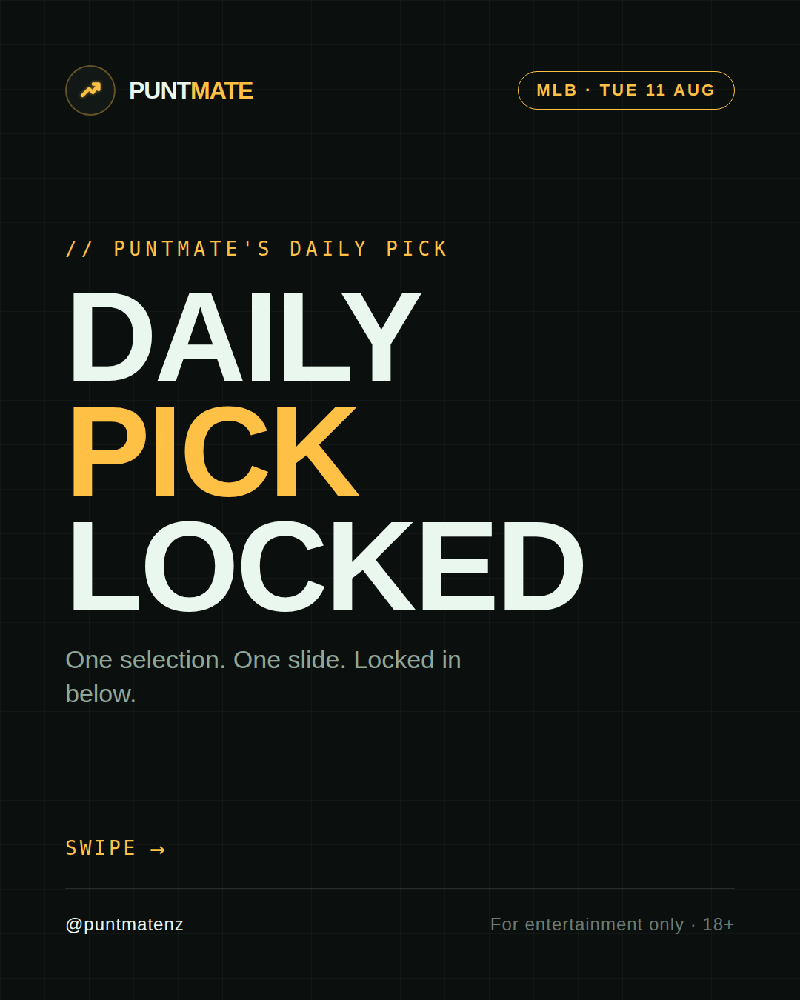
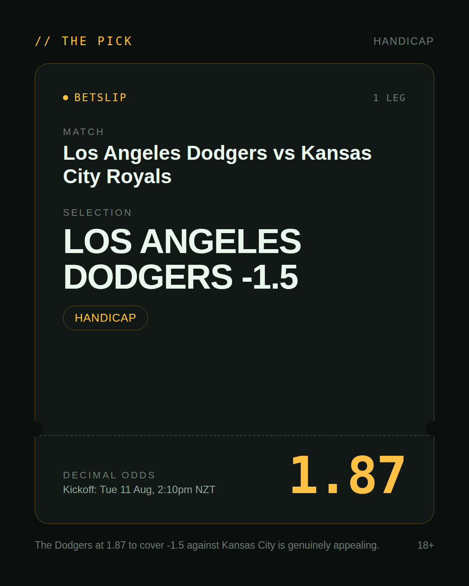
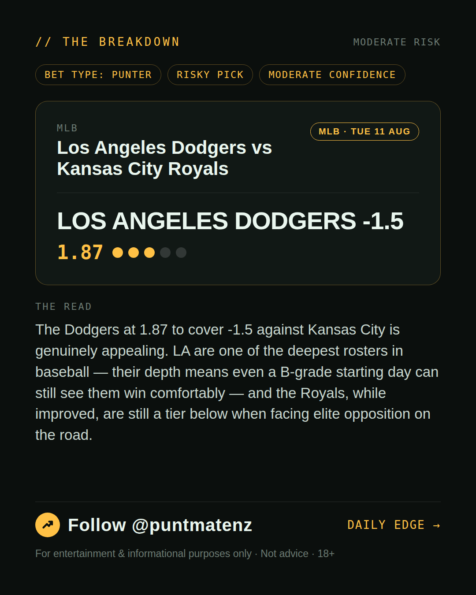
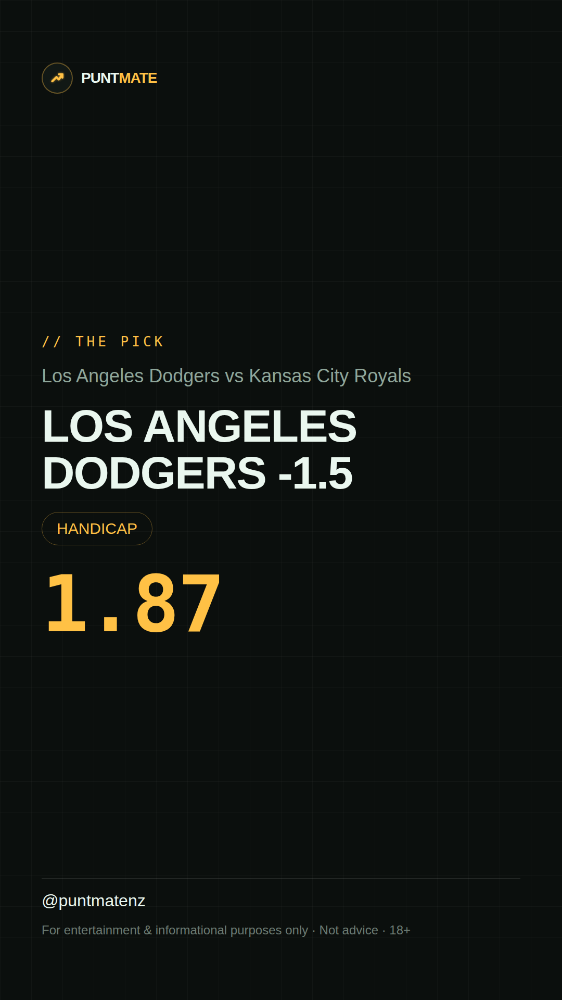

*🎯 PUNTMATE NZ — MLB* 🏟 Los Angeles Dodgers vs Kansas City Royals *PICK:* LOS ANGELES DODGERS -1.5 *ODDS:* 1.87 (Handicap) *BET TYPE: PUNTER* _The Dodgers at 1.87 to cover -1.5 against Kansas City is genuinely appealing. LA are one of the deepest rosters in baseball — their depth means even a B-grade starting day can still see them win comfortably — and the Royals, while improved, are still a tier below when facing elite opposition on the road._ ────────────────── 📲 Join Telegram for daily picks ⚠️ For entertainment & informational purposes only. Not advice. 18+.
🎯 MLB — Los Angeles Dodgers vs Kansas City Royals LOS ANGELES DODGERS -1.5 @ 1.87 (Handicap) BET TYPE: PUNTER Solid touch here. Not a lock, but the value's real and the form backs it up. The Dodgers at 1.87 to cover -1.5 against Kansas City is genuinely appealing. LA are one of the deepest rosters in baseball — their depth means even a B-grade starting day can still see them win comfortably — and the Royals, while improved, are still a tier below when facing elite opposition on the road. Follow for daily value picks → @puntmatenz ⚠️ For entertainment & informational purposes only. Not advice. 18+. #PuntmateNZ #SportsBetting #NZTAB #MLB
| has_pick | True |
| pick_id | 2026-08-10_Los_Angeles_Dodgers_vs_Kansas_City_Royals |
| run_id | 31430974427 |
| generated_at | 2026-08-10T20:52:18.261532+00:00 |
| post_date | 2026-08-10 |
| match | Los Angeles Dodgers vs Kansas City Royals |
| sport | baseball_mlb |
| sport_label | MLB |
| market | Handicap |
| selection | LOS ANGELES DODGERS -1.5 |
| odds | 1.87 |
| bet_type | PUNTER_BET |
| bet_type_label | BET TYPE: PUNTER |
| bet_type_reason | Solid touch here. Not a lock, but the value's real and the form backs it up. The Dodgers at 1.87 to cover -1.5 against Kansas City is genuinely appealing. LA are one of the deepest rosters in baseball — their depth means even a B-grade starting day can still see them win comfortably — and the Royals, while improved, are still a tier below when facing elite opposition on the road. |
| classification | RISKY_PICK |
| risk | RISKY_PICK |
| confidence | MODERATE |
| confidence_label | MODERATE |
| final_explanation | The Dodgers at 1.87 to cover -1.5 against Kansas City is genuinely appealing. LA are one of the deepest rosters in baseball — their depth means even a B-grade starting day can still see them win comfortably — and the Royals, while improved, are still a tier below when facing elite opposition on the road. |
| public_caution | Keep this one light — the value's there but so is the uncertainty. |
| theme | night |
| carousel_paths | ['data/review/2026-08-10_Los_Angeles_Dodgers_vs_Kansas_City_Royals/cover.png', 'data/review/2026-08-10_Los_Angeles_Dodgers_vs_Kansas_City_Royals/tip.png', 'data/review/2026-08-10_Los_Angeles_Dodgers_vs_Kansas_City_Royals/breakdown.png'] |
| carousel_urls | ['https://raw.githubusercontent.com/kingofthecastle24/puntmate/main/data/cards/2026-08-10_Los_Angeles_Dodgers_vs_Kansas_City_Royals_night_1_cover.png', 'https://raw.githubusercontent.com/kingofthecastle24/puntmate/main/data/cards/2026-08-10_Los_Angeles_Dodgers_vs_Kansas_City_Royals_night_2_tip.png', 'https://raw.githubusercontent.com/kingofthecastle24/puntmate/main/data/cards/2026-08-10_Los_Angeles_Dodgers_vs_Kansas_City_Royals_night_3_breakdown.png'] |
| story_path | data/review/2026-08-10_Los_Angeles_Dodgers_vs_Kansas_City_Royals/story.png |
| story_url | https://raw.githubusercontent.com/kingofthecastle24/puntmate/main/data/cards/2026-08-10_Los_Angeles_Dodgers_vs_Kansas_City_Royals_night_story.png |
| intended_platforms | ['telegram', 'instagram_feed', 'instagram_story', 'facebook'] |
| workflow_state | GENERATED |
| has_punter_multi | False |
| has_gambler_multi | False |
| has_degenerate_multi | False |